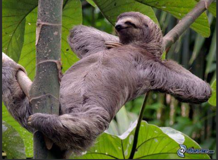

C'est le paresseux. Pas plus gros qu'un chat, cet animal vit dans les arbres des forets tropicales de l'Amérique du Sud
Il se déplace lentement d'une branche à l'autre : 5 m à la minute. Il se nourrit de feuilles et met un mois pour les digérer. C'est un gros dormeur: au moins 2à heures par jour. IL enterre ses crottes au pied de l'arbre qu'il habite.